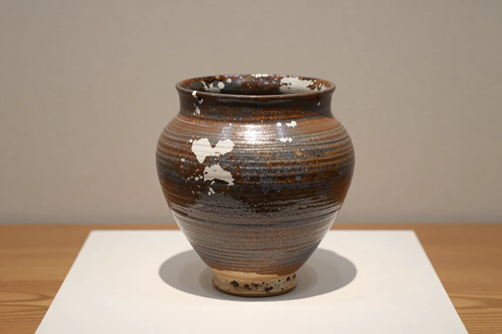

керамика · 1926–1975 · также: Керамика мингэй, Японское движение народного ремесла, Посуда масико
Японское движение, начавшееся в 1926 году. Янаги Соэцу и гончары Хамада Сёдзи и Каваи Кандзиро восхваляли простые горшки безвестных деревенских гончаров и делали новые горшки того же рода.

Главная идея
Самые красивые горшки — простые орудия повседневной жизни, которые безымянные мастера делают помногу, из местной глины и без желания славы.
Принципы дизайна
Берите местную глину и местный глазурный материал деревни, в пределах 10 км от печи.
Делайте крепкие полезные формы: кувшины, бутылки, чаши и большие блюда, выдерживающие ежедневное использование.
Вытачивайте быстро и уверенно и не исправляйте мелкие неточности формы.
Пишите широкой кистью, в 3–6 мазков, железно-коричневым или синим.
Наливайте или окунайте глазурь несколькими движениями и позволяйте ей накладываться и течь.
Берите зольные глазури, какидзи и нука, обжигаемые примерно при 1250 °C в дровяной ступенчатой печи.
Делайте одну и ту же форму много раз и не подписывайте её как искусство.
Пускайте горшок в ежедневное дело: для чая, риса, солений и цветов.
Антипаттерны
Полированная безупречная форма, выдающая эго художника